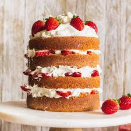

Strawberry Cake Recipe

Ingredients
Sponge Cake
- 5 eggs
- 2 cups sugar
- 2 cups wheat flour
- 1 cup of warm milk
- 1 tablespoon baking powder
Filling
- 1/2 liter of milk
- 1 can of condensed milk
- 1 can heavy cream
- 3 egg yolks
- 3 tablespoons of cornstarch
- 2 boxes of strawberries
Topping
- 2 boxes of whipping cream
- 1 box of strawberry
Preparation
Sponge Cake
- Beat the egg whites until stiff, add the egg yolks one by one and continue beating, add the sugar and beat some more
- Add the sifted flour and the hot milk and stir well, without beating
- Bake it in a round, greased and floured pan in a preheated oven at medium temperature for 30 minutes at the most, or when it is golden brown and very dry
Filling
- Put the milk in a saucepan and let it heat up, add the beaten yolks, the condensed milk and the cornstarch and let it thicken, stirring constantly
- Remove from heat and add the heavy cream
Assembling the cake
- Unmold the cake when it is warm (it gets easier)
- Cut it in half with a serrated knife
- Mashed potato some strawberries (mashed potato them with a fork, add a little sugar and a little water)
- Drizzle one half of the cake with the syrup made from the puree, pour the filling and chopped strawberries and put the other half of the cake on top
Topping
- Beat the whipping cream in the mixer until it is very fluffy (it is very fast)
- Cover the cake and decorate with strawberry halves
Back to home page